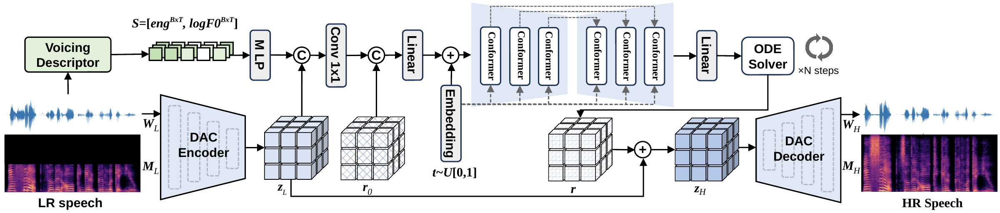
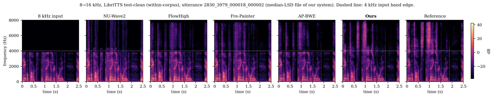
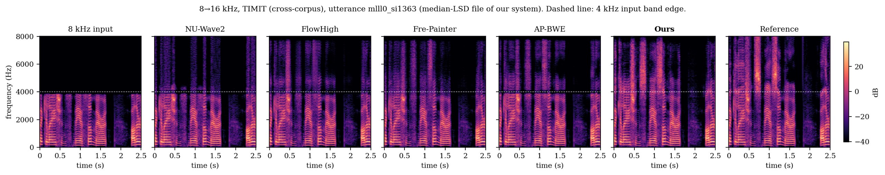
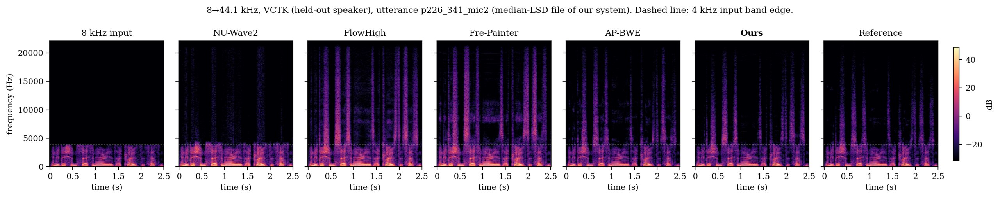

Abstract
Speech bandwidth extension (BWE) recovers the high-frequency content missing from narrowband speech, and one low-band input admits many plausible full-band signals. Most methods work in the waveform or spectrogram domain. The continuous latent of a pretrained neural codec is an attractive alternative, since it is compact, aligned frame by frame between the narrowband input and its full-band target, and paired with a reusable decoder. Existing latent-domain methods, however, generate the whole target rather than only the part the low band does not determine, and they leave the codec's decoding path untouched. We present CodecFlow, a two-stage BWE system that addresses both points. Stage 1 trains a conditional flow-matching converter on the frozen encoder's latent to generate only the residual between the low-band and full-band latents, conditioned on the low-band latent and a frame-level voicing descriptor. Stage 2 adapts the codec decoder to reconstruct waveforms from these continuous predictions with the quantiser bypassed. Ablations show that the residual flow gives a better system than input-anchored or whole-latent flows once each has an adapted decoder. Decoder adaptation carries most of the broadband gain and quantiser removal most of the low-band gain. Against four published systems on three test sets, CodecFlow attains the lowest log-spectral distance (LSD) and high-band LSD at 16 and 44.1 kHz and the highest ViSQOL at 16 kHz. Low-band fidelity remains below that of waveform-domain methods.
Method

View full size ↗Results


View full size ↗

View full size ↗

View full size ↗Baseline comparison
Two utterances per test set, shared across all systems. CodecFlow is highlighted in violet.
Loading audio comparisons…
Ablation study
Decoding-path ablation. RFC: residual flow converter; FLC: full-latent flow converter; RVQ: residual vector quantiser; D: decoder.
Loading ablation samples…